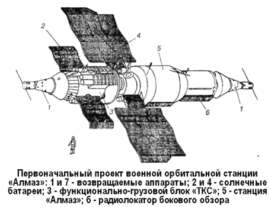
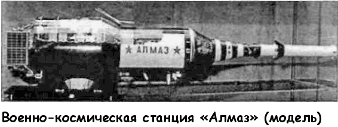
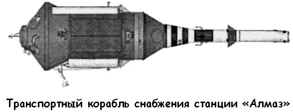

Военно-космическая станция «Алмаз»
Результаты, полученные в ходе полетов кораблей «Союз-4» и «Союз-5», были признаны удовлетворительными. Системы стыковки и жизнеобеспечения были проверены в деле. Их можно было использовать при монтаже и эксплуатации более крупной станции. Однако для вывода в космос тяжелых орбитальных станций типа «МКБС» требовался еще носитель «Н-1». А вот как раз носителя-то и не было, что задерживало всю работу.
Другим путем к созданию долговременной орбитальной станции подошел извечный соперник и конкурент «королевцев» Владимир Челомей, Генеральный конструктор ОКБ-52 (ЦКБМ).
Начало работ над проектом орбитальной станции в ОКБ-52 можно отнести к 12 октября 1964 года, когда Челомей предложил сотрудникам бюро заняться созданием посещаемой орбитальной пилотируемой станции со сменяемым экипажем из двух или трех человек и сроком существования год или два Станция предназначалась для решения задач научного, народнохозяйственного и оборонного значения и выводилась на орбиту носителем «УР500К» («Протон-К»).
Эскизный проект такой станции, получившей наименование «Алмаз», был принят в 1967 году Межведомственной комиссией, состоявшей из 70 известных ученых и руководителей КБ и НИИ промышленности и Министерства обороны.
В 1968 году уже появились макеты комплекса «Алмаз», на заводе № 22 (ныне — завод имени Хруничева), полным ходом шло изготовление корпусов станции. Для конструкторского коллектива Владимира Мясищева (бывшего ОКБ-23), вошедшего филиалом в челомеевский ОКБ-52, разработка больших корпусов космической орбитальной станции была задачей не слишком трудной.
Формально «Алмаз» разрабатывался по техническому заданию Министерства обороны. Он состоял из орбитальной пилотируемой станции, возвращаемого аппарата и большегрузного транспортного корабля снабжения «ТКС».
По проекту предполагалось, что «Алмаз» будет более совершенным космическим разведчиком, чем «Зениты» — автоматические беспилотные аппараты-фоторазведчики. Большой фотоаппарат «Алмаза» расходовал пленку на фотографирование наземных объектов только по воле космонавтов.
Космонавты могли разглядывать Землю в видимом или инфракрасном спектре через мощный «космический бинокль».
Увидев нечто подозрительное, они давали бы команду на серию снимков. Фотопленка проявлялась на борту под контролем экипажа. Достойные внимания военной разведки фрагменты изображения передавались на Землю по телевизионному каналу.
Эти же или любые другие участки планеты также могли просматриваться с помощью радиолокатора бокового обзора.
Условия разведки требовали постоянной ориентации станции на Землю с возможностью разворотов для поиска и нацеливания фотоаппаратуры на различные объекты. Потому от системы управления «Алмаза» требовались высокая точность длительного поддержания трехосной ориентации, развороты вдоль продольной оси на заданные углы, ориентация солнечных батарей на Солнце, и при всем этом расход рабочего тела должен был позволить активно работать не менее трех-четырех месяцев.

При проектировании станции «Алмаз» («11Ф71») были выбраны следующие габариты: полная длина — 14,6 метра, максимальный диаметр — 4,2 метра, обитаемый объем — 100 м?, полная масса — 17,8 тонны, полезная нагрузка — 5 тонн. Станция рассчитывалась на экипаж из двух человек и время работы на орбите в 410 дней. Электроснабжение осуществлялось панелями солнечных батарей общей площадью 52 м?, мощность — 3,12 кВт.
Конструктивно гермоотсек станции разделялся на две зоны, которые можно условно назвать зоной большого и зоной малого диаметров. Зона малого диаметра располагалась в передней части станции и закрывалась при выведении коническим головным обтекателем. Далее шла зона большого диаметра. Стыковка транспортных кораблей должна была осуществляться с задней торцевой части станции, где находилась сферическая шлюзовая камера, соединявшаяся с гермоотсеком большим переходным люком. В задней части шлюзовой камеры размещался пассивный стыковочный узел, в верхней — люк для выхода в открытый космос, в нижней — люк в камеру, из которой можно было спускать на Землю капсулы с результатами наблюдений и исследований.
Капсула имела свой пороховой двигатель, парашютную систему, сбрасываемый теплозащитный экран и спускаемый отсек с маяком. Стабилизация ее перед включением двигателя осуществлялась закруткой после необходимой ориентации перед выпуском со станции.
Вокруг шлюзовой камеры размещались агрегаты двигательных установок станции, развертываемые антенны и две большие панели солнечных батарей. Хвостовая часть станции с шлюзовой камерой закрывалась конусообразным щитом из экранно-вакуумной теплоизоляции.

В передней части гермоотсека в зоне малого диаметра размещался бытовой отсек экипажа со спальными местами, столиком для приема пищи, креслом для отдыха и иллюминаторами обзора.
За бытовым — рабочий отсек с пультом управления, рабочим местом, оптическим визиром, позволяющим наблюдать отдельные детали поверхности Земли, панорамно-обзорное устройство для широкого обзора Земли, перископическое устройство для осмотра окружающего космического пространства.
Задняя часть гермоотсека была занята аппаратурой наблюдения и системой управления.
Большой оптический телескоп для наблюдения Земли занимал место позади рабочего отсека от пола до потолка станции.
Учитывая, что в период проектирования станции «Алмаз» в США велись работы над различного рода космическими перехватчиками, на станции были приняты меры для защиты от подобных вражеских объектов: станция оснащалась скорострельной пушкой конструкции Нудельмана. Ее можно было навести в нужную точку через прицел, поворачивая станцию. Нападать на кого-либо «Алмаз» не мог — это было лишь средство самозащиты.
Работы по ракетно-космической системе «Алмаз» распределялись следующим образом. Проект в целом, сама станция и возвращаемый аппарат корабля «ТКС» разрабатывались в головной организации Челомея — Центральном конструкторском бюро «Машиностроение» (ЦКБМ),
«ТКС» — в филиале № 1 ЦКБМ. Там же создавалась ракета «УР500К». Станция, корабль и носитель должны были изготавливаться на машиностроительном заводе имени Хруничева.
Несколько слов следует сказать и о корабле снабжения «ТКС», являвшемся неотъемлемой частью комплекса «Алмаз».
«ТКС» состоял из функционально-грузового блока и возвращаемого аппарата. В отличие от космического корабля «Союз», где спускаемый аппарат располагался под бытовым отсеком, возвращаемый аппарат «ТКС» занимал верхнее место, чем обеспечивалось его надежное спасение в аварийной ситуации. Такая компоновка потребовала наличия люка в днище возвращаемого аппарата для перехода экипажа в функционально-грузовой блок. Это решение поначалу вызывало сомнения у многих специалистов, однако последующие натурные пуски возвращаемого аппарата подтвердили надежность конструкции при спуске с орбиты.
Стыковочный агрегат «ТКС» располагался на заднем торце грузового блока в зоне увеличенного диаметра, в которой предполагалось размещать капсулы для сброса информации с «Алмаза». Космонавты в скафандрах при сближении со станцией должны были располагаться непосредственно у стыковочного агрегата и наблюдать за операциями через иллюминаторы.
Это упрощало процедуру стыковки, расширяло обзор и позволяло уйти от системы перископов и телекамер, как на корабле «Союз». В случае возникновения при стыковке ударных нагрузок быстрой разгерметизации корпуса «ТКС» произойти не могло из-за большого внутреннего объема корабля.
Стыковочный агрегат «ТКС» имел конструкцию, принципиально отличающуюся от узла стыковки «Союза», кроме того, он сразу же разрабатывался с внутренним люкомлазом.
Агрегаты двигательной установки, баки с топливом, микродвигатели ориентации, а также солнечные батареи располагались вокруг корпуса «ТКС», снаружи зоны малого диаметра, и закрывались при выведении обтекателями.

Габариты корабля «ТКС» («11Ф72»): полная длина — 17,5 метра, максимальный диаметр — 4,2 метра, обитаемый объем — 45 м?, полная масса — 17,51 тонны, масса полезного груза — 12,6 тонны. Корабль рассчитан на максимальный экипаж из трех человек. Время эксплуатации — 7 дней, время эксплуатации в составе комплекса «Алмаз» — 200 дней.
Электроснабжение осуществляется панелями солнечных батарей площадью 40 м?, мощность — 2,4 кВт.
Поскольку «ТКС» еще нуждался в отработке, на первом этапе создания системы «Алмаз» экипажи на станцию должны были доставляться кораблями «Союз».
При конструировании «Алмаза» использовались самые современные технические решения. Так, на станции устанавливалась электромеханическая система стабилизации с шаровым двигателем-маховиком и кольцевым маховиком с большим кинетическим моментом. Подвешенный в электромагнитном поле шар-маховик по тем временам был очень оригинальной разработкой. Другой экзотической новинкой являлось использование для управления аппаратурой наблюдения бортовых цифровых вычислительных машин «Аргон16».
К 1970 году были созданы корпуса восьми стендовых и двух летных блоков станции и велась наземная отработка систем.
Был определен состав экипажей для полетов на станцию, тренировки которых велись в Центре подготовки космонавтов.
Однако работы над приборным составом станции затянулись, а время поджимало: руководство отрасли требовало новых космических достижений к 100-летию со дня рождения Ленина и к началу XXIV съезда КПСС. Тогда группа конструкторов в ЦКБЭМ во главе с Константином Феоктистовым предложила взять готовый корпус станции «Алмаз», поставить на него увеличенные панели солнечных батарей, смонтировать систему жизнеобеспечения и отработанную аппаратуру стыковки «Игла», а экипаж отправить на любом из кораблей «7К-ОК». И станцию, и корабль с экипажем можно запустить с помощью ракеты «Протон-К».
Идея в конце концов овладела умами руководства Министерства общего машиностроения, и под его нажимом изготовленные корпуса, оснастка, часть аппаратуры и документация были переданы в ЦКБЭМ, где на основе «Алмаза» с применением систем кораблей «Союз» в кооперации с филиалом № 1 ЦКБМ менее чем за год была создана долговременная орбитальная станция «ДОС», проходившая в документах под обозначением «Изделие 17К».
«ДОС» отличалась от станции «Алмаз» переходным отсеком в передней части зоны малого диаметра, к которому производилась стыковка кораблей «Союз». В хвостовой части станции был установлен модифицированный приборно-агрегатный отсек корабля «Союз». Энергопитание станции предполагалось осуществлять с помощью четырех небольших солнечных батарей, также взятых от «Союза» и смонтированных попарно в районе зоны малого диаметра и приборноагрегатного отсека. В связи с ускорением работ по «ДОС» для полетов к станции в ЦКБЭМ была спешно разработана транспортная модификация корабля «Союз» («7К-Т»), имеющая стыковочный агрегат новой конструкции.
Орбитальная станция «ДОС-1» (или «Салют») была запущена 19 апреля 1971 года. Так началась эпоха орбитальных станций серии «Салют», продлившаяся до весны 1986 года, когда космонавты Леонид Кизим и Владимир Соловьев поставили «Салют-7» на консервацию, после чего перебрались на новую орбитальную станцию «Мир».